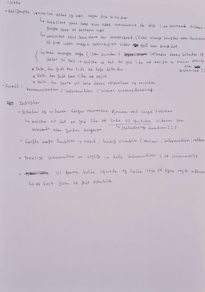
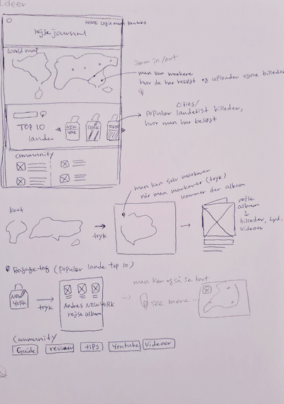
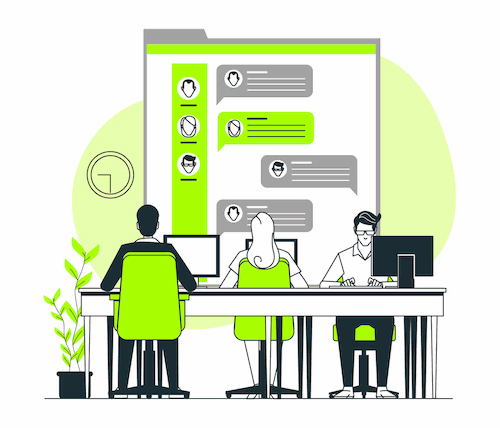
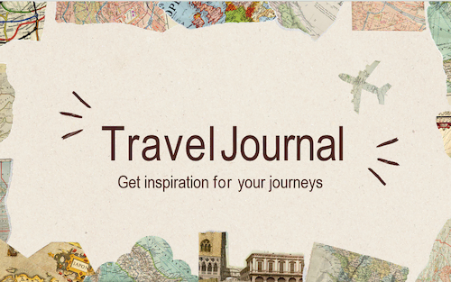

- Emnet, målgrupper og formål : Jeg valgte emnet
rejsejournal på baggrund af min passion for rejser og fotografi. Formålet var at fremme
kommunikation og information blandt dedikerede rejse- og fotointeresserede.
- Research metoder : For at indsamle data har jeg anvendt
desk-research, observation samt interviews.
- Indsigter :
I løbet af opgaven opdagede jeg, at brugeranmeldelser og vurderinger er
afgørende på rejsewebsites. Visuel information som billeder og virtuelle rundvisninger hjælper
brugere med bedre forståelse af indholdet. Jeg identificerede også brugernes præferencer, især
den unge generations tendens til at bruge sociale medier som primær kilde til rejseinformation.
Moodboard : I designets indledende fase skabte jeg et
moodboard med fokus på simplicitet, afslapning og vintage.
Ved at inkorporere papirtekstur og dæmpede farver ønskede jeg at vække nostalgi og vintage-stemning.
Målet var at skabe en digital version af et fotoalbum eller dagbog, der genopliver minder om
tidligere oplevelser. Moodboard-processen involverede udvælgelse af nøgleord, samling af billeder,
teksturer og farvepalet samt arrangement af disse elementer i et collageformat. Dette visuelle
værktøj hjalp mig med at tydeliggøre konceptet og forstå den ønskede stemning og æstetik.



Storyboard : Storyboardet følger en
fortællelinje, der opdeler historien i triggere, øjeblikke, de
beslutninger, karakteren træffer undervejs, og ender med fordelene. Ved at skabe storyboardet
tænkte jeg på brugerens perspektiv og anvendte visualisering, for at argumentere for idéens
brugbarhed.
Lightning Demo : I designprocessens tidlige faser
brugte jeg metoder som "Lightning Demo" og "Crazy 8s". Jeg
brainstormede nøgleord og pointer, genererede forskellige designideer, og skitserede otte
variationer af den bedste idé.


Solution skitser : Jeg udviklede
en
mere konkret løsningskitse baseret på en idé fra Crazy 8s, hvor jeg
tilføjede en kortfattet
tekst for at forklare hovedfunktionerne. Målet var at holde teksten kort, da jeg mente, at folk er
mindre tilbøjelige til at læse lange tekster. Jeg ønskede, at folk hurtigt kunne forstå løsningen
med en kort forklaring.
Det første udkast : Jeg udstillede mit
første
udkast i klasseværelset med et gallerikoncept. Dette
anonyme arrangement tillod mig at modtage feedback fra mine klassekammerater og gav mig mulighed for
at se andre studerendes ideer, hvilket var med til at give inspiration.

Style tile : Jeg valgte
en stil,
der kombinerer et forum
og en dagbog. Ideen var at skabe en analog vintage stemning gennem elementer som farver,
teksturer og
typografi. Jeg udvalgte visuelle komponenter som skrifttyper, knapstil, ikoner, logo
osv.
Målet var at skabe en visuelt fokuseret stil, hvor tekstur, farver og billeder har større
betydning end selve teksten.
- Wireframe (Figma) :
- Simpelt design : Jeg brugte gråtoner for at undgå at
fokusere på farver og designelementer, og i stedet koncentrere sig om strukturen.
- Placering af indhold : Jeg fokuserede på placering af tekst, billeder og andre
indholdselementer for at vise, hvordan
informationen vil blive præsenteret.
- Layout repræsentation : Visuel repræsentation af hovedsektioner som navigation,
indholdsområde osv. for at give en ide om grundlæggende layoutstruktur.
- Visning af funktioner : Visuel repræsentation af grundlæggende interaktioner og funktioner
for at give en forståelse af webstedets funktionalitet.
- Overvejelse af responsivitet: Justering af wireframes efter forskellige skærmstørrelser for
at tage højde for responsivt design.
Prototype (Hifi) : Efter at
have udarbejdet wireframes gik
jeg videre til at skabe prototyper. I disse blev billeder,
skrifttyper, farver og designelementer integreret.
Formålet med prototyperne var at teste og evaluere
produktets design, funktionalitet og brugeroplevelse, inden den endelige version skulle udvikles.
Det
gav mig mulighed for at identificere løse problemer inden.

Tests :
Jeg lavede to forskellige tests af mine prototyper - en 5-sekunders test og tænke-højt
test.
5-sekunder test : Testeren kiggede på min hjemmeside i
fem
sekunder og beskrev derefter, hvad de havde observeret. Resultatet var at testerne let kunne
identificere mit emne på grund af en klar overskrift og billeder.
Tænke-højt tests :
Tre personer deltog i testen: en facilitator stillede testpersonen spørgsmål om ruten på
hjemmesiden, og testpersonen
forsøgte at finde den pågældende rute. Under testen tog en observatør noter.
Indsigter fra tests : Det viste sig at brugeren
manglede
en oversigt over lande (i stedet for en Top-10-liste) og generelt mere tydelige
navigationsmuligheder.
Derfor tilføjede knapper til at
vælge blandt kontinenterne, så navigationsmulighederne blev mere
tydelige.
Før jeg begyndte at kode hjemmesiden, udarbejdede jeg et sitemap og et
layoutdiagram. Via sitemap
fik jeg en struktureret oversigt over hjemmesidens indhold og navigation, hvilket hjalp mig med at
identificere hovedkategorier og underkategorier. Jeg kunne opbygge
strukturen for hver side ved hjælp af et layoutdiagram inden jeg påbegyndte koden.
I kodningen af websitet udvidede jeg min viden med nye koder, såsom
implementering af knapper,
hover-effekter og dropdown-funktioner.
udførte en Lighthouse-test og fokuserede på at optimere billedstørrelser ved
hjælp af Squoosh.
Dette reducerede belastningstiden, forbedrede websidens hastighed og skabte mere kontrast mellem
baggrund og knapper. Resultaterne af
Lighthouse-testen gav mig identificerede områder, hvor jeg kunne forbedre
webstedet yderligere.
Læs
dokumentation

Jeg lærte at skabe en effektiv præsentation ved at anvende pitch-metoden. Under forberedelsen af
min 7-minutters præsentation identificerede jeg nøglepunkter og udvalgte specifikke billeder. Min
pitch blev struktureret med en introduktion, der opdelte emnet i fire kategorier: forskning, design,
kodet site og konklusion. Gennem anvendelsen af Pitch-metoden kunne jeg organisere min dokumentation
mere klart og simpelt. Samtidig kunne jeg præsentere mit pitch mere klart.
Læs
præsentationen